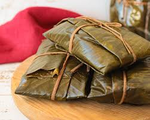
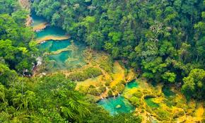
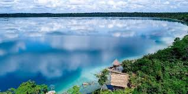

Platos Típicos
El departamento de Alta Verapaz es conocida por su rica gastronomía que incluye platos tradicionales como estos:
- Kak’ik: Una sopa picante de pavo con achiote, cilantro y otras especias.
- Boxboles: Bolas de masa de maíz envueltas en hojas de hierbabuena.
- Suban-ik: Un guiso de carnes y vegetales con especias.
- Tamales: Aunque comunes en toda Guatemala, los tamales de Alta Verapaz tienen un sabor distintivo que los diferencia de los demas tamales.
Esta comida demuestra la gran cantidad de gastronomia que hay en Guatemala y sus departamentos
Lugares Turisticos
Semuc Champey
Semuc Champey es un impresionante monumento natural en el departamento de Alta Verapaz, Guatemala . Consiste en una serie de piscinas turquesas naturales formadas por el río Cahabón que fluye bajo un puente de piedra caliza de 300 metros de largo . El nombre "Semuc Champey" proviene del idioma Q'eqchi' y significa "donde el río se esconde bajo la tierra" . Es un lugar popular para nadar y disfrutar de la naturaleza, y la mejor vista se puede obtener desde el punto de observación llamado "El Mirador", que requiere una caminata de aproximadamente 45 minutos a través de la selva tropical
Laguna Lachuá
Semuc Champey es un impresionante monumento natural en el departamento de Alta Verapaz, Guatemala . Consiste en una serie de piscinas turquesas naturales formadas por el río Cahabón que fluye bajo un puente de piedra caliza de 300 metros de largo . El nombre "Semuc Champey" proviene del idioma Q'eqchi' y significa "donde el río se esconde bajo la tierra" . Es un lugar popular para nadar y disfrutar de la naturaleza, y la mejor vista se puede obtener desde el punto de observación llamado "El Mirador", que requiere una caminata de aproximadamente 45 minutos a través de la selva tropical.
